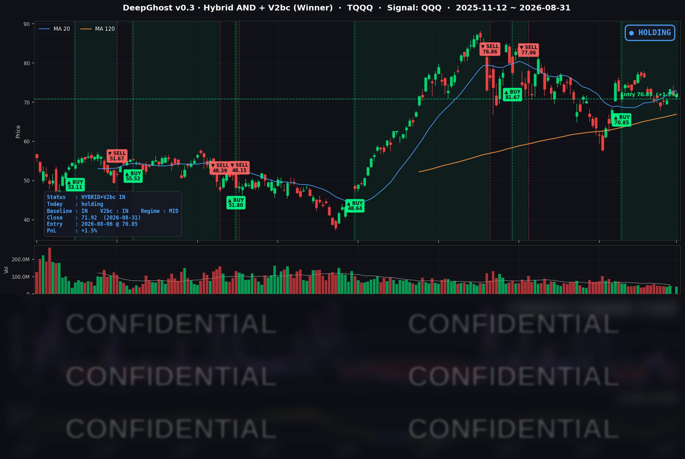

👻 매일 시그널과 히스토리를 홈페이지에서 한눈에 → www.ghostai.co.kr
미국이 호르무즈 해협의 이란 로켓 발사대를 타격하면서 유가가 3.5% 뛰었고 10년물 국채 금리는 1년 최고로 마감했습니다. 불안한 매크로 상황에서 횡보장이 지속되고 있습니다.
📊 오늘의 매매 신호
| 항목 | 내용 |
|---|---|
| 오늘 할 일 | ✅ 아무것도 안 해도 됩니다 |
| 포지션 상태 | 📈 TQQQ 보유 중 (IN POSITION) |
| 매수 진입일 | 2026-08-06 (18거래일째) |
| 진입가 → 현재가 | $70.85 → $71.92 |
| 현재 포지션 수익 | +1.51% |
TQQQ 시그널 — IN POSITION
현재 상태: 매수 포지션 유지 중 | 이번 포지션 수익률 +1.51%

나스닥100(QQQ)이 +0.05%로 사실상 제자리였고 TQQQ는 +0.10%로 마감했습니다. 전략의 평가손익은 전일 +1.41%에서 +1.51%로 소폭 올라섰습니다. 8월 6일 진입가 $70.85 대비 플러스를 유지하고 있습니다.
8월은 플러스로 마감했습니다. 7월 31일 종가 대비 QQQ +4.18%, TQQQ +11.30%입니다. 다만 오늘 하루만 보면 지수가 버틴 것은 폭넓은 매수세 덕분이 아니라 소수 대형주와 반등한 반도체 덕분이었습니다.
오늘 미국 시장 — 시황 요약
지수 마감
| 지수 | 종가 | 등락률 | 비교 기준 |
|---|---|---|---|
| S&P 500 | 7,686.14 | -0.58% | 8/27 대비 (2거래일) |
| 나스닥 종합 | 26,370.89 | -0.64% | 8/27 대비 (2거래일) |
| 다우존스 | 53,185.90 | -0.72% | 8/27 대비 (2거래일) |
| 러셀 2000 | 2,956.45 | -1.92% | 8/27 대비 (2거래일) |
| QQQ (나스닥100) | 716.76 | +0.05% | 전일 대비 |
| TQQQ | 71.92 | +0.10% | 전일 대비 |
S&P 500·다우·러셀 2000은 셋 다 시가가 고가였습니다. 개장 이후 단 한 번도 시가 위로 올라서지 못했다는 뜻입니다. 주말 사이 벌어진 이란 타격 소식을 장 시작과 동시에 반영한 뒤 하루 내내 그 아래에서 움직였습니다.
나스닥과 QQQ만 다른 모습이었습니다. 나스닥은 장중 26,249까지 내렸다가 되돌렸고, QQQ는 고가 근처에서 소폭 상승 마감했습니다. 지수 성격의 차이가 아니라 반도체 반등이 원인입니다.
8월 한 달 실적은 나스닥 종합 +3.93%, S&P 500 +2.62%, 다우 +1.34%, 러셀 2000 +0.86%입니다. 대형 기술주와 소형주의 격차가 한 달 내내 벌어졌습니다.
국채 금리 동향
| 만기 | 수익률 | 전일 대비 |
|---|---|---|
| 3개월 | 3.732% | -0.8bp |
| 5년 | 4.507% | +2.7bp |
| 10년 | 4.758% | +2.8bp |
| 30년 | 5.249% | +2.9bp |
10년물 4.758%는 최근 1년 중 가장 높은 종가입니다. 지난 1년 레인지가 3.953-4.758%인데 오늘 종가가 최상단입니다. 30년물 5.249%도 1년 고점에서 6bp 아래로, 장기 구간 전체가 1년 최고 부근에 있습니다.
오늘 상승은 만기 전 구간에서 균일했습니다. 5년 +2.7bp, 10년 +2.8bp, 30년 +2.9bp로 거의 평행 이동이었고 3개월물만 제자리였습니다. 특정 회의의 결정을 다시 반영한 움직임이라면 중단기물에 집중되는데, 오늘처럼 전 구간이 함께 오르는 것은 인플레이션 전제 자체가 위로 옮겨졌을 때 나타나는 형태입니다. 유가 급등이 그 계기와 맞아떨어집니다.
장단기 스프레드(10년−3개월)는 +102.6bp로 역전 없이 정상적인 우상향이며, 단기물이 멈춘 채 중장기물만 올라 커브가 소폭 가팔라졌습니다. 커브가 역전이 아니라 완만하게 가팔라지고 있다는 것은 채권 시장이 침체보다 물가 재가속을 먼저 걱정하고 있다는 뜻입니다.
연준 발언 & 금리 패스
8월 31일 당일에 이뤄진 연준 위원의 공개 발언은 확인되지 않았습니다. 잭슨홀 직후 주간이자 8월 마지막 거래일이라 예정된 연설이 없었습니다.
시장이 오늘 반영하고 있던 것은 8월 28일 워시 의장의 첫 잭슨홀 연설입니다. 물가를 "연준의 압도적 우선순위"로 규정하고 노동시장은 "완전고용에 부합한다"고 평가하면서, 고용을 근거로 금리를 내릴 명분을 스스로 닫았습니다. 9월 인상 확률은 연설 전 35%에서 57%로 올라섰고, 오늘 기준으로도 25bp 인상 확률이 약 56%입니다. 인하가 아니라 인상을 놓고 저울질하는 국면입니다.
오늘의 유가 급등은 이 저울을 인상 쪽으로 더 기울입니다. 다만 9월 FOMC 전에 9월 4일 고용보고서와 9월 11일 소비자물가가 남아 있어, 현재 확률은 확정된 경로가 아니라 두 지표에 따라 크게 움직일 수 있는 값입니다.
오늘의 핵심 이슈
1. 미국·이란 교전 재개가 오늘 시장을 움직인 가장 큰 원인입니다. 미군이 호르무즈 해협 인근 라라크 섬의 이란 로켓 발사대 2기를 타격했고 이란이 미사일로 대응했습니다. 한 달 만의 대규모 교전 재개입니다. 여기서 중요한 것은 주가가 내리면서 국채 금리도 함께 올랐다는 사실입니다. 통상적인 위험회피라면 안전자산인 국채로 자금이 몰려 금리가 내려야 하는데 오늘은 주식과 채권이 함께 약세였습니다. 시장이 이 사건을 성장 충격이 아니라 물가 충격으로 받아들였다는 뜻입니다.
2. 하루 전의 로테이션이 정확히 반대로 뒤집혔습니다. 8월 28일에는 반도체가 전부 내리고 대형 기술주가 전부 올랐는데, 오늘은 반도체 5종목이 전부 오르고(+1.71%) 대형 기술주 6종목이 전부 내렸습니다(-1.42%). 두 흐름이 서로를 지워서 지수가 제자리처럼 보인 것입니다. 이런 크기의 하루 반전은 최근 5년 중 상위 3% 안에 드는 드문 움직임입니다.
3. 넓은 시장은 지수보다 나빴습니다. 8월 27일부터 2거래일 동안 S&P 500 구성 486종목 중 오른 것은 29.8%뿐이었고 중앙값은 -0.87%였습니다. 같은 기간 지수는 -0.58%입니다. 지수보다 중앙값이 더 크게 내렸다는 것은 시가총액 상위 소수가 지수를 방어했다는 뜻입니다.
변동성 & 투자심리
VIX는 14.92로 8월 27일 대비 +2.83%입니다(8월 28일 결측으로 2거래일 기준). 최근 1년 252거래일 중 하위 8% 수준으로 여전히 낮습니다.
오늘은 그 조합에 균열이 보입니다. 지정학 사건이 있었고 유가가 3.5% 뛰었으며 10년물이 1년 최고인데도 VIX는 15를 넘지 못했습니다. 시장이 이 사건을 지수 전체를 흔드는 충격이 아니라 섹터 간 자리바꿈으로 처리하고 있다는 뜻입니다. 로테이션은 지수 수준에서 상쇄되므로 변동성 지표에 잡히지 않습니다.
공포탐욕지수는 54(중립)입니다. QQQ 거래량도 20일 평균의 0.96배로 평상 수준이었습니다. 교전 재개라는 헤드라인에도 거래량 급증이 없었다는 것은, 오늘의 움직임이 대규모 포지션 조정이 아니라 방향 조정에 가까웠음을 뜻합니다.
매크로 & 원자재
| 품목 | 종가 | 등락률 | 비교 기준 |
|---|---|---|---|
| WTI 원유 | $86.31 | +3.49% | 전일 대비 |
| 원유 ETF (USO) | $133.70 | +2.84% | 8/27 대비 (2거래일) |
| 금 선물 | $4,497.30 | +0.43% | 전일 대비 |
WTI가 86.31달러로 +3.49% 올랐습니다. 장중 저가 84.11에서 고가 86.79까지 한 방향으로 올랐습니다. 호르무즈 해협은 세계 원유 물동량의 큰 몫이 지나는 길목이라, 유가 상승은 곧바로 헤드라인 물가로 연결됩니다. 7월 근원 물가가 3.3%인데 헤드라인이 3.7%로 더 높은 원인이 에너지이고, 유가가 여기서 더 오르면 그 격차가 벌어집니다.
지정학 리스크가 커졌는데도 금은 오르지 않았습니다. 금 선물은 +0.43%로 사실상 제자리였습니다. 시장이 이 사건을 안전자산 수요보다 금리 상방 요인으로 처리했음을 다시 확인해 줍니다. 금리가 오르면 이자를 낳지 않는 금의 보유 비용이 커집니다. 다만 8월 전체로는 금이 +11.07%로 주요 자산 중 가장 크게 올랐습니다.
섹터로는 에너지가 유일한 강세였습니다. 19종목 중 17종목이 올랐고 유전 서비스와 정유가 앞장섰습니다. 반대로 운송은 유가 상승이 곧 비용 상승이라 8종목 전부 내렸습니다.
주요 종목 동향
| 종목 | 종가 | 등락률 | 비고 |
|---|---|---|---|
| TSLA | 367.95 | +5.51% | 9/3 사이버캡 공개 행사 기대, 거래량 20일 평균의 1.84배 |
| QCOM | 170.48 | +3.83% | Horizon Ultra AI PC 공개, 어도비 협업 |
| MU | 958.73 | +2.77% | 반도체 동반 반등 |
| NVDA | 220.78 | +1.48% | 8/28 -4.57%의 부분 회복 |
| AVGO | 370.34 | +0.42% | 반도체 반등 |
| INTC | 89.51 | +0.04% | 보합 |
| QQQ | 716.76 | +0.05% | 거래량 20일 평균의 0.96배 |
| SPY | 767.05 | -0.30% | |
| NFLX | 81.05 | -0.82% | 대형 기술주 동반 약세 |
| AAPL | 316.85 | -0.89% | 사흘 연속 상승 후 첫 하락 |
| META | 572.34 | -0.98% | 대형 기술주 동반 약세 |
| MSFT | 507.29 | -1.22% | 금리 상승에 약세 |
| GOOGL | 339.35 | -2.09% | 대형 기술주 중 낙폭 2위 |
| AMZN | 259.77 | -2.50% | 커버리지 최대 낙폭, 개별 악재는 확인되지 않음 |
- 커버리지 안에서 오늘의 분기선이 선명합니다. 상승 6종목 중 5개가 반도체이고, 하락 6종목은 대형 기술주 전부입니다. 나머지 상승 1종목인 TSLA는 9월 3일 사이버캡 행사라는 개별 재료로 움직였습니다.
- 다음 일정이 중요합니다. 9월 4일 고용보고서, 9월 11일 소비자물가, 9월 15~16일 FOMC가 차례로 놓여 있습니다. 9월 7일 노동절은 휴장이라 9월 4일에 발생하는 신호의 체결일은 9월 8일 시가입니다.
Ghost.AI — Quantitative AI Investment
Model: DeepGhost v0.3 | Transformer-Based Deep Learning
Coverage: 13 tickers | Updated every trading day after US market close
⚠️ 본 자료는 정보 제공 목적으로만 작성되었으며 투자 권유가 아닙니다. 모든 투자의 책임은 투자자 본인에게 있습니다. 과거 성과가 미래 수익을 보장하지 않습니다.
[유의사항]
- 본 서비스는 불특정 다수를 대상으로 발행되는 단방향 정보 제공 서비스이며, 투자자 개인의 재산 상황·투자 목적·위험 선호도를 반영한 개별 투자 조언이 아닙니다.
- 고스트에이아이 주식회사는 고객과 쌍방향 의사소통(개별 상담, 맞춤형 자문 등)을 제공하지 않습니다.
- 본 콘텐츠는 투자 권유 또는 매매 주문의 청약·청약의 권유에 해당하지 않으며, 최종 투자 판단 및 그에 따른 손익의 책임은 전적으로 투자자 본인에게 있습니다.
고스트에이아이 주식회사